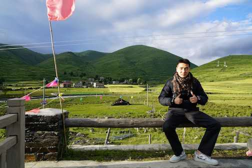

|
 |
Yu Cao 曹宇
Research Engineer Bloomberg Engineering, New York, New York |
|
I am a Research Engineer/Senior Software Engineer in Bloomberg focused on developing pricing algorithms for fix-income market. Before Bloomberg, I did my master with research on distributed systems in Computer Science Department, Courant Institute of Mathematical Sciences, New York University. Prior to NYU, I had my B.E and M.S in Beihang University. |
Updates
Research Intern for at Bytedance Applied Machine Learning Systems team for optimizing resource efficiency for large sccale DNN inference service.
Teaching Assistant for at Distributed Systems graduate class for NYU CS.
Applied scientist intern in AWS AI at Rekognition Team developing deep learning methods for multi-lingual text detection.
Competition Winner of Atomic Video Action Recognition Challenge in CVPR 2018 Workshop with human action recognition mean Average Precision of 0.2108.
Publications and tech report
|
Fast and Resource-efficient Hardware Implementation of Modified Line Segment Detector |
||
|
Minimal Non-Linear Camera Pose Estimation Method Using Lines for SLAM Application |
||
|
Human Centric Spatio-Temporal Action Localization |